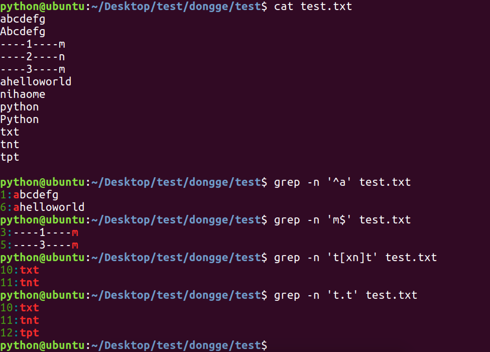

07-Linux 高级命令
Linux常用的高级命令¶
- echo
- 重定向>
- cat
- more
- 管道|
- ln
- find
- grep
- tar/gzip/bzip2/zip
- scp
- wget
- tree
- which
- shutdown/reboot
- df/du
控制台输出：echo¶
echo "HelloWorld"
向控制台输出HelloWorld信息
输出重定向：>¶
Linux允许将命令执行结果重定向到一个文件，本应显示在终端上的内容保存到指定文件中。
ls > test.txt
test.txt 如果不存在，则创建，存在则覆盖其内容
注意：>输出重定向会覆盖原来的内容，>>输出重定向则会追加到文件的尾部
查看&合并文件内容：cat¶
cat xxx.py 可以用来快速查看某个文件内容，输出到控制台
cat test.txt >> haha.txt 将test.txt的内容追加到haha.txt中
cat 1.txt 2.txt > 1_2.txt将1.txt 2.txt内容合并到1_2.txt中
分屏显示：more¶
查看内容时，在信息过长无法在一屏上显示时，会出现快速滚屏，使得用户无法看清文件的内容，此时可以使用more命令，从头开始，每次只显示一页，空格键显示下一页，b键上一页，按下q键退出显示，按下h键可以获取帮助。
more xxx.py
管道：|¶
管道：一个命令的输出可以通过管道做为另一个命令的输入。
管道我们可以理解现实生活中的管子，管子的一头塞东西进去，另一头取出来，这里“ | ”的左右分为两端，左端塞东西(写)，右端取东西(读)。即管道左边的输出结果作为管道右侧的参数
cat info.txt | more
tree | more
注意
more管道符读到的内容只能前进，不能后退；只能使用空格或回车向下看，不能使用b回看
建立链接文件：ln¶
Linux链接文件类似于Windows下的快捷方式。
链接文件分为软链接和硬链接。
- 软链接：软链接不占用磁盘空间，源文件删除则软链接失效。常用，可以对文件或文件夹创建
ln -s 源文件 链接文件
- 硬链接：硬链接只能链接普通文件，不能链接目录。
ln 源文件 链接文件
没有-s选项代表建立一个硬链接文件，两个文件占用相同大小的硬盘空间，即使删除了源文件，链接文件还是存在，一般用于保护系统重要的文件。所以-s选项是更常见的形式。
注意
如果软链接文件和源文件不在同一个目录，源文件要使用绝对路径，不能使用相对路径。
查找文件：find¶
find命令功能非常强大，通常用来在特定的目录下搜索符合条件的文件，也可以用来搜索特定用户属主的文件。
常用用法：
| 命令 | 含义 |
|---|---|
| find ./ -name test.sh | 查找当前目录下所有名为test.sh的文件or目录 |
| find ./ -name '*.sh' | 查找当前目录下所有后缀为.sh的文件or目录 |
| find ./ -name "[A-Z]*" | 查找当前目录下所有以大写字母开头的文件or目录 |
| find ./ -maxdepth 1 -name '*.sh' | 只查找当前目录所有后缀为.sh的文件or目录 |
| find ./ -type f -name "Test*" | 查找当前目录所有以Test开头的文件，不包含目录 f文件，d目录，l链接 |
| find /tmp -size 2M | 查找在/tmp 目录下等于2M的文件 |
| find /tmp -size +2M | 查找在/tmp 目录下大于2M的文件 |
| find /tmp -size -2M | 查找在/tmp 目录下小于2M的文件 |
| find ./ -mtime +3 | 查找当前目录下修改时间超过3天的文件 |
| find ./ -mmin -10 | 查找当前目录下修改时间小于10分钟的文件 |
| find ./ -size +4k -size -5M | 查找当前目录下大于4k，小于5M的文件 |
| find ./ -perm 777 | 查找当前目录下权限为 777 的文件或目录 |
- 修改时间mtime和mmin的判断方式如下

文本搜索：grep¶
Linux系统中grep命令是一种强大的文本搜索工具，grep允许对文本文件进行模式查找。如果找到匹配模式， grep打印包含模式的所有行。
grep一般格式为：
grep [-选项] '搜索内容串' 文件名
在grep命令中输入字符串参数时，最好用引号或双引号括起来。
例如：
从某个文件搜索
grep 'a' 1.txt
搜索当前目录所有文件
grep 'for' *
递归搜索当前目录及子目录的文件
grep -rni "字符串abc" *
常用选项说明：**
| 选项 | 含义 |
|---|---|
| -v | 显示不包含匹配文本的所有行（相当于求反） |
| -n | 显示匹配行及行号 |
| -i | 忽略大小写 |
| -r | 包含子目录 |
grep搜索内容串可以是正则表达式。
正则表达式是对字符串操作的一种逻辑公式，就是用事先定义好的一些特定字符、及这些特定字符的组合，组成一个“规则字符串”，这个“规则字符串”用来表达对字符串的一种过滤逻辑。
grep常用正则表达式：
| 参数 | 含义 |
|---|---|
| ^a | 行首,搜寻以 m 开头的行；grep -n '^a' 1.txt |
| ke$ | 行尾,搜寻以 ke 结束的行；grep -n 'ke$' 1.txt |
| [Ss]igna[Ll] | 匹配 [] 里中一系列字符中的一个；搜寻匹配单词signal、signaL、Signal、SignaL的行；grep -n '[Ss]igna[Ll]' 1.txt |
| . | (点)匹配一个非换行符的字符；匹配 e 和 e 之间有任意一个字符，可以匹配 eee，eae，eve，但是不匹配 ee，eaae；grep -n 'e.e' 1.txt |

- 结合find，管道，grep的综合命令：
find . -type f -name "*.sh" | xargs grep -ni "poplar"
在指定（当前）目录，递归查找包含poplar字符串的文件，标示出poplar所在文件及行号
等同于
grep -rni "poplar" --include=*.sh
归档管理：tar¶
计算机中的数据经常需要备份，tar是Unix/Linux中最常用的备份工具，此命令可以把一系列文件归档到一个大文件中，也可以把档案文件解开以恢复数据。
tar使用格式：
tar [参数] 打包文件名 文件
tar命令很特殊，其参数前面可以使用“-”，也可以不使用。
常用参数：
| 参数 | 含义 |
|---|---|
| -c | 生成档案文件，创建打包文件 |
| -v | 列出归档解档的详细过程，显示进度 |
| -f | 指定档案文件名称，f后面一定是.tar文件，所以必须放选项最后 |
| -t | 列出档案中包含的文件 |
| -x | 解开档案文件 |
注意：除了f需要放在参数的最后，其它参数的顺序任意。
常用命令：
- 打包
当前目录所有文件
tar -cvf xxx.tar *以.txt结尾的文件
tar -cvf xxx.tar *.txt打包指定目录或文件
tar -cvf xxx.tar my-file my-dir
- 解包
解包到当前目录：
tar -xvf xxx.tar解包到指定目录：
tar -xvf xxx.tar -C my-dir（需要先创建my-dir目录）
文件压缩解压：gzip¶
tar与gzip命令结合使用实现文件打包、压缩。 tar只负责打包文件，但不压缩，用gzip压缩tar打包后的文件，其扩展名一般用xxxx.tar.gz。也会见到缩写的.tgz这种扩展名。
gzip使用格式如下：
gzip [选项] 被压缩文件
常用选项：
| 选项 | 含义 |
|---|---|
| 无 | 压缩gzip xxx.tar |
| -d | 解压gzip -d xxx.tar.gz |
| -r | 压缩所有子目录 |
tar这个命令并没有压缩的功能，它只是一个打包的命令，但是在tar命令中增加一个选项-z可以调用gzip实现压缩的功能，最终实行一个先打包后压缩的过程。
-z ：指定压缩包的格式为 xxx.tar.gz
tar压缩：tar zcvf xxx.tar.gz 文件1 文件2 ...
tar解压：tar zxvf xxx.tar.gz
解压到指定目录：tar zxvf xxx.tar.gz -C target_dir/ （大写字母“C”）
文件压缩解压：bzip2¶
tar与bzip2命令结合使用实现文件打包、压缩(用法和gzip一样)。
tar只负责打包文件，但不压缩，用bzip2压缩tar打包后的文件，其扩展名一般用xxxx.tar.bz2。
在tar命令中增加一个选项(-j)可以调用bzip2实现了一个压缩的功能，实行一个先打包后压缩的过程。
压缩用法：tar -jcvf 压缩包包名 文件1 文件2...(例：tar jcvf bak.tar.bz2 *.c)
解压用法：tar -jxvf 压缩包包名 (例：tar jxvf bak.tar.bz2)
文件压缩解压：zip、unzip¶
通过zip压缩文件的目标文件不需要指定扩展名，默认扩展名为zip。
压缩文件：zip [-r] 目标文件(没有扩展名) 源文件
文件：
zip bak *当前目录所有文件，也可以指定文件文件夹：
zip -r bak *当前目录所有文件&目录递归
解压文件：unzip -d 解压后目录文件 压缩文件
解压到指定目录：
unzip -d ./target_dir bak.zip解压到当前目录：
unzip bak.zip
远程拷贝文件：scp¶
- 从远程复制文件到本地
scp root@192.168.16.66:/home/poplar/xxx.tar.gz /home/test/
- 从本地复制文件到远程
scp /home/test/xxx.png root@192.168.16.66:/home/poplar/
- 从远程复制目录到本地 -r
scp -r root@192.168.16.66:/home/poplar/day01 /home/test/
- 从本地复制目录到远程 -r
scp -r /home/test/day01 root@192.168.16.66:/home/poplar/
文件下载：wget¶
- 下载普通文件
wget http://p1.qhimgs4.com/t01ce0387e64e3428ca.jpg
- 以指定文件名保存文件
wget -O girl.jpg http://p1.qhimgs4.com/t01ce0387e64e3428ca.jpg
- 断点续传
wget -c http://p1.qhimgs4.com/t01ce0387e64e3428ca.jpg
目录树状结构：tree¶
使用tree命令可以查看指定目录的树状结构
poplar@PoplarTang:~/Lesson/day01$ tree
.
├── Test.sh
├── TestDir
│ └── test.sh
├── a
│ └── b
│ └── c
│ └── d
│ └── haha.txt
├── haha.txt
├── hhh.sh
├── pics
│ ├── 20190213185356_sczsq.jpg
│ ├── 20190216212132_uvtxf.thumb.700_0.gif
│ └── url-list.txt
├── test.txt
└── ttt.txt
Warning
有的系统默认未安装tree，需要先使用sudo apt install tree安装后才可以使用tree命令
查看命令位置：which¶
有时我们想知道被执行的命令在哪个目录，以方便切换或更新不同版本，如Python。可以使用which 命令
poplar@PoplarTang:~/Lesson$ which python
/usr/bin/python
poplar@PoplarTang:~/Lesson$ which ls
/bin/ls
关机重启：reboot、shutdown¶
| 命令 | 含义 |
|---|---|
| reboot | 重新启动操作系统 |
| shutdown –r now | 重新启动操作系统，shutdown会给别的用户提示 |
| shutdown -h now | 立刻关机，其中now相当于时间为0的状态 |
| shutdown -h 20:25 | 系统在今天的20:25 会关机 |
| shutdown -h +10 | 系统再过十分钟后自动关机 |
空间占用：df、du¶
- 查看所有挂载的文件系统空间情况
df -hl
- 查看当前文件及文件夹大小
du -sh *
查找&过滤进阶¶
- 查找10分钟以内被修改过的文件
find . -mmin -10 -name "*.sh"
- 删除指定目录下超过30天的备份文件（不在30以内的）
find /home/poplar/Lesson/Backup/ -name "*bak.tar.gz" -mtime +30 | xargs rm或
find /home/poplar/Lesson/Backup/ -name "*bak.tar.gz" -mtime +30 -exec rm -f {} \;
- xargs输入转参数
xargs将标准输入转成各种格式化的参数
命令
[command 1] | xargs [command 2]就是将command 1的标准输出结果，通过管道|变成xargs的标准输入，然后xargs再将此标准输入变成参数，传给[command 2]
查找指定文件所有包含字符串
for的行find . -name "*.sh" | xargs grep "for"一次性下载多个文件（断点续传）
cat url-list.txt | xargs wget -c
- awk 高级文档编辑工具
用于按列截取输出结果
ll -h | awk '{print $9,$5}'打印当前目录文件及大小
echo $RANDOM | md5sum | awk '{print $1}'生成随机MD5
awk -F: '$3<100' /etc/passwd使用 awk 列出 UID 小于 100 的用户
其他好用的命令¶
- diff 对比文件区别
diff xxx.sh ooo.sh
- wc 统计行数字数
文件内容为:123 aaa bbb哈
执行echo "123 aaa bbb哈" > xxx.txt
wc -l xxx.txt 文件内容的行数1
wc -w xxx.txt 文件内容的单词数3
wc -c xxx.txt 文件内容的字节数15
wc xxx.txt 文件内容的行数,单词数,字节数1 3 15
wc -m xxx.txt 文件的字符数13
- sed 文档编辑器
sed是一种流编辑器，它是文本处理中非常中的工具，能够完美的配合正则表达式使用。一般用于自动编辑转换程序，动态调整文件内容。
sed 's/good/GOODS/' file替换每行第一个指定字符串（输出所有行）
sed -n 's/good/GOODS/p' file替换每行第一个指定字符串（只输出替换的行）
sed -i 's/good/GOODS/g' file替换所有指定字符串，并应用到文件
sed '2d' file删除第二行
sed '/^good/d'删除good开头的行
sed -n '3p' file打印第3行
- date日期
显示当前时间 # Tue May 7 14:35:31 DST 2019
date -d 'now'
当前日期和时间 # 20190507-14:34:25
date +"%Y%m%d %H:%M:%S"
- history命令历史
使用history命令可以查看之前输过的命令及其id，
使用!id的形式，可以快速执行指定历史命令
- 按大小倒序列出当前目录文件
ls -l | awk '{print $9,$5}' | sort -rnk 2
手册网站¶
Linux命令大全：http://man.linuxde.net/
菜鸟Linux命令：https://www.runoob.com/linux/linux-command-manual.html